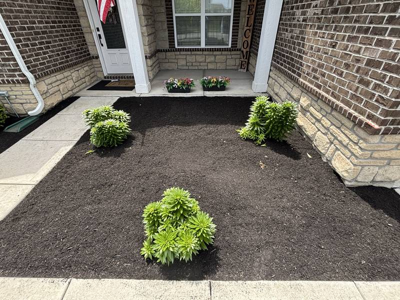
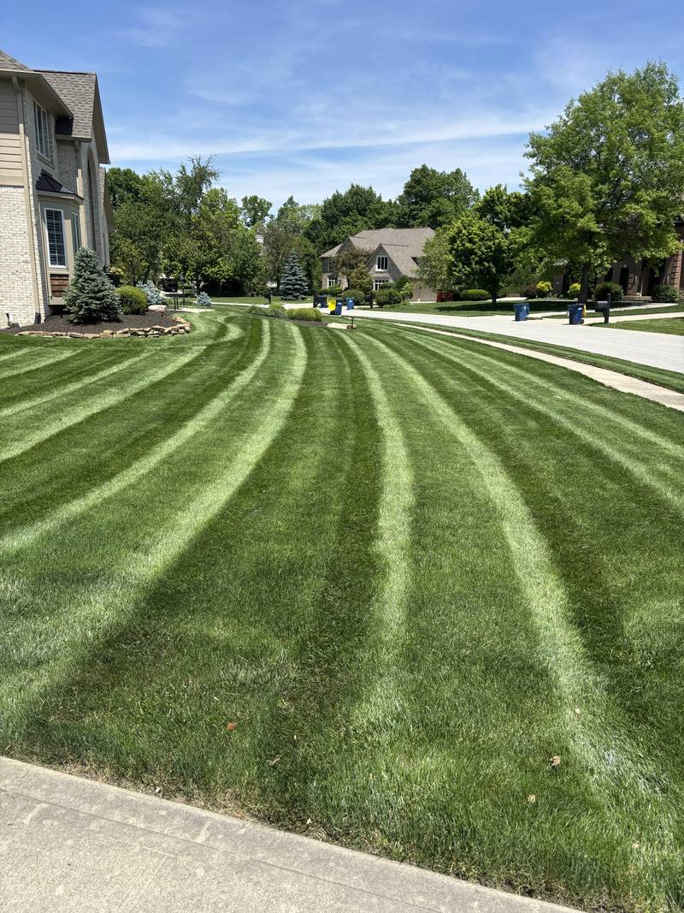
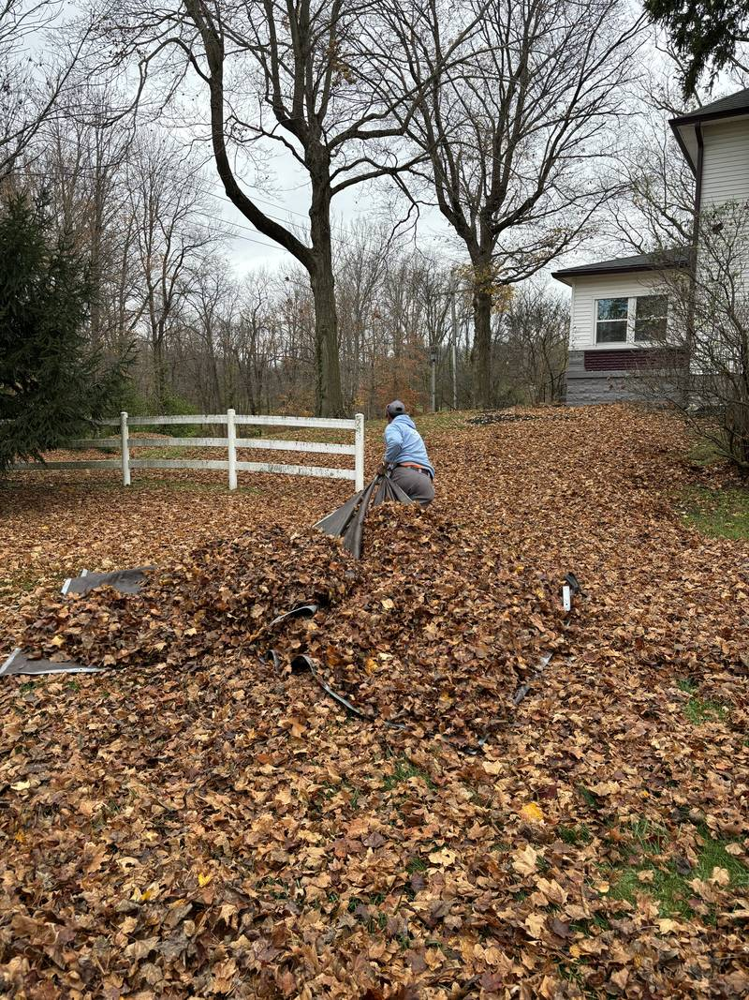
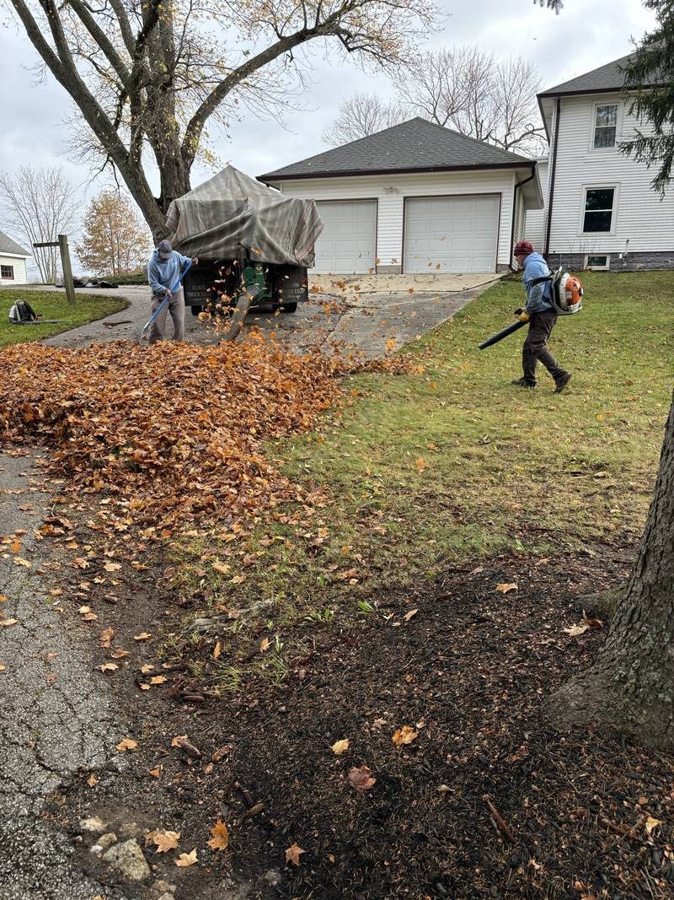
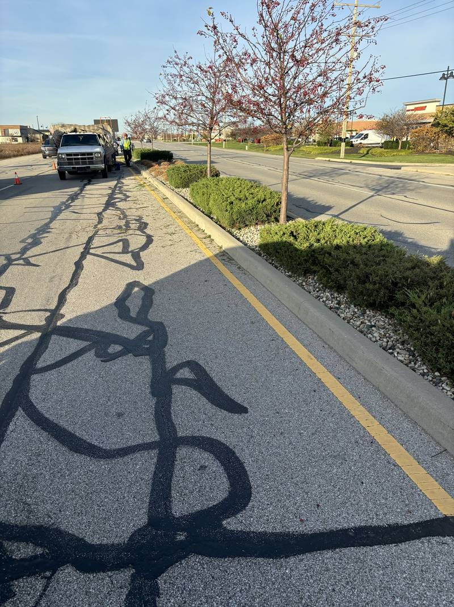
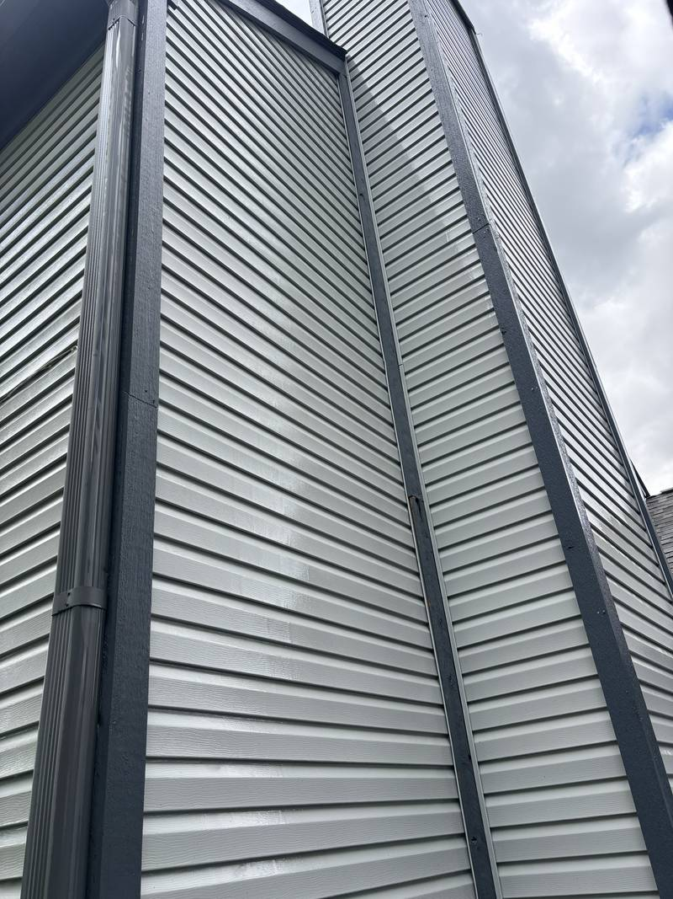
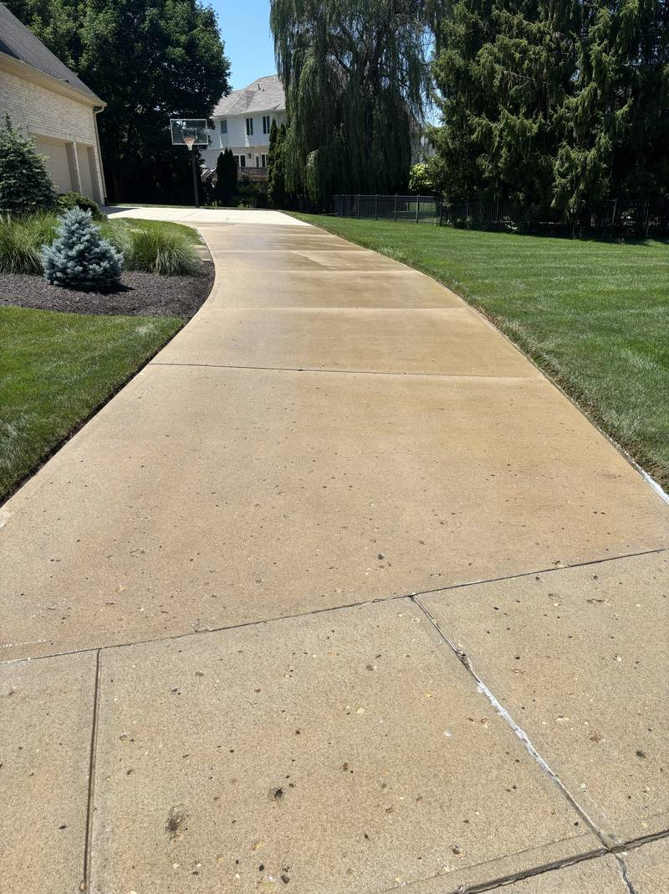
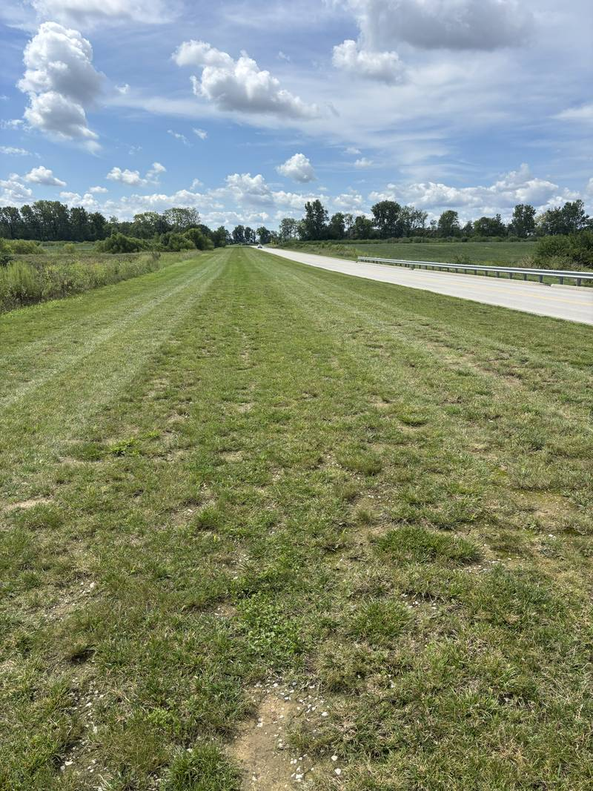

Services
Everything the property needs, from one crew.
Seven services covering all four seasons — so you're not chasing a different vendor every time the weather changes.







FAQ
Questions we get a lot
What areas do you serve?
We provide all seven services in Whitestown, Zionsville, Westfield, and Carmel.
Do you work with HOAs and commercial properties?
Yes. We maintain homes, businesses, HOA common areas, and municipal properties.
Can I get more than one service on the same visit?
Yes. We can combine services such as cleanup and mulching, or soft washing and pressure washing.
How do I get a quote?
Call or text (317) 677-4709, email us, or use the contact form. Larger commercial and HOA properties may need a walkthrough.
Are you insured?
Yes. Certificates of insurance are available on request.

Get started
Let's get your property on the schedule.
Free estimates, straight answers, and a crew that shows up when we said it would.